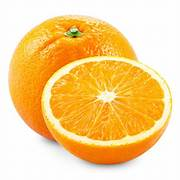

tentangbuah.com

jeruk

Jeruk (bahasa Inggris: orange) adalah buah dari spesies citrus dalam famili Rutacea . Istilah "jeruk" umumnya mengacu pada Citrus × sinensis[1] yang juga disebut jeruk manis dan Citrus aurantium yang disebut jeruk pahit.
Jeruk manis bereproduksi secara aseksual (apomiksis melalui nucellar embryon), yaitu melalui sistem cangkok, okulasi, setek, dan varietas jeruk manis muncul melalui mutasi.
Jeruk manis merupakan hibrida antara jeruk bali (Citrus maxima) dan mandarin (Citrus reticulata).[2][6] Jeruk manis telah memiliki genom lengkap yang diurutkan.